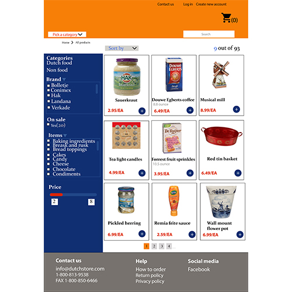

Stroopwafels
Opdracht
Vanuit school was de opdracht om de snoepwinkel te herontwerpen aan de hand van de geleerde patterns. De geleerde patterns hielden onder andere in hoe je kan laten zien bij welke stap van het bestellen de gebruiker is. Door herkenbare patterns toe te passen zou de website gebruiksvriendelijker moeten worden.
Mijn bijdrage
Dit was een individueel project dus ik heb bijna alle fases zelf doorlopen. De fases waren concepten bedenken en het ontwerpen van de uiteindelijke website. Zo heb ik een flowchart gemaakt, een styleguide en ben uiteindelijk op een ontwerp gekomen. Bij dit project vond ik het belangrijk om onder andere de kleuren die er gebruikt werden ongeveer terug te laten komen en dat dat de prijs van het product duidelijk is zodat de gebruiker precies weet hoeveel het zal kosten.
